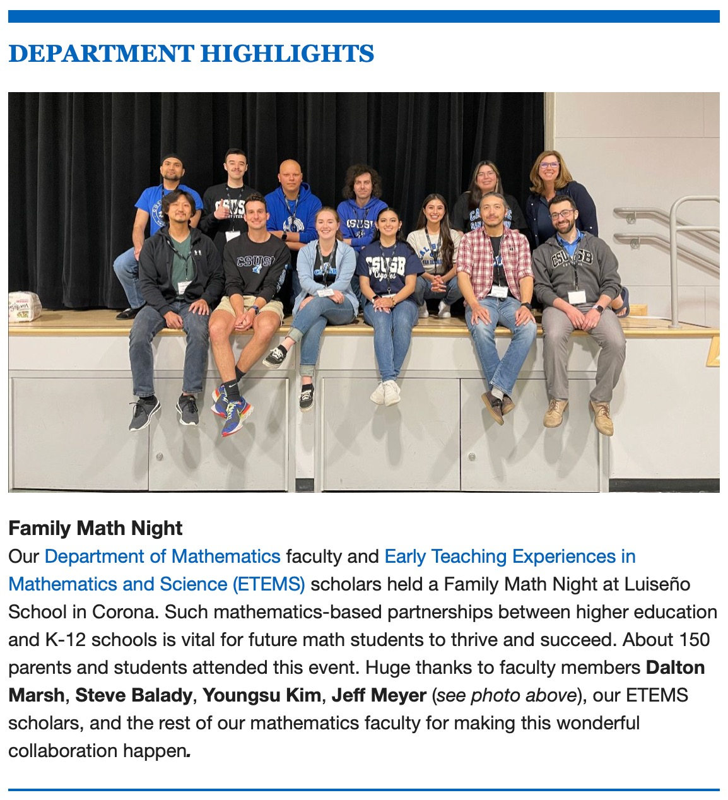

About Me
Summary
Born and raised in Southern California to two loving parents, I developed an early passion for math, science, and technology. From a young age, I was drawn to problem-solving and found immense joy in playing games and unraveling puzzles. As I grew older, I delved into the world of technology, building my first computer in middle school and honing my coding skills with Raspberry Pi projects.
Driven by a curiosity and longing for knowledge, I was fortunate to earn a full scholarship to California State University, San Bernardino (CSUSB). Throughout my college journey, I actively engaged in campus life, participating in various volunteer opportunities, such as "Family Math Night," where I had the privilege to teach over 150 K-8th grade students and their parents problem-solving skills in math and science.
As a first-generation college graduate, I take immense pride in being the trailblazer in my family. My success serves as an inspiration to my younger siblings and other family members, motivating them to pursue their dreams with the right mindset, strong values, and quality education.
With an unwavering determination, I am driven in my pursuit of a fulfilling career in data science and analytics. My goal to make a positive impact through innovation and problem-solving fuels my passion for continuous learning and professional growth. I am committed to leveraging my expertise in mathematics, computer science, and analytics to contribute meaningfully to the ever-evolving world of technology and analytics.
Education
Georgia Institute of Technology - Atlanta, GA
January 2024 - Present
Master's of Science, Analytics - Computational Analytics Track
Coursework: Introduction to Analytics Modeling | Business Fundamentals for Analytics
California State University - San Bernardino, CA
Graduated on May 2023
Bachelor's degree, Mathematics
Math Coursework: Calculus | Statistics | Linear Algebra | Discrete Math | Combinatorics | Real Analysis | Number Theory | Theory of Rings & Fields
CS Coursework: Information Technology | Introduction to Programming | Data Structures | Algorithms | Machine Organization